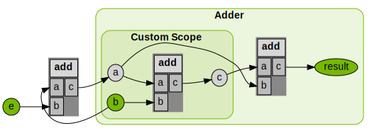

Differentiability#
By default, Warp generates a forward and backward (adjoint) version of each kernel definition. The backward version of a kernel can be used to compute gradients of loss functions that can be back propagated to machine learning frameworks like PyTorch.
Arrays that participate in the chain of computation which require gradients must be created with requires_grad=True, for example:
a = wp.zeros(1024, dtype=wp.vec3, device="cuda", requires_grad=True)
The wp.Tape class can then be used to record kernel launches and replay them to compute the gradient of
a scalar loss function with respect to the kernel inputs:
tape = wp.Tape()
# forward pass
with tape:
wp.launch(kernel=compute1, inputs=[a, b], device="cuda")
wp.launch(kernel=compute2, inputs=[c, d], device="cuda")
wp.launch(kernel=loss, inputs=[d, l], device="cuda")
# reverse pass
tape.backward(l)
After the backward pass has completed, the gradients with respect to the inputs are available from the array.grad attribute:
# gradient of loss with respect to input a
print(a.grad)
Note that gradients are accumulated on the participating buffers, so if you wish to reuse the same buffers for multiple
backward passes you should first zero the gradients using Tape.zero().
- class warp.Tape[source]#
Record kernel launches within a Tape scope to enable automatic differentiation. Gradients can be computed after the operations have been recorded on the tape via
Tape.backward().Example
tape = wp.Tape() # forward pass with tape: wp.launch(kernel=compute1, inputs=[a, b], device="cuda") wp.launch(kernel=compute2, inputs=[c, d], device="cuda") wp.launch(kernel=loss, inputs=[d, l], device="cuda") # reverse pass tape.backward(l)
Gradients can be accessed via the
tape.gradientsdictionary, e.g.:print(tape.gradients[a])
- backward(loss=None, grads=None)[source]#
Evaluate the backward pass of the recorded operations on the tape.
A single-element array
lossor a dictionary of arraysgradscan be provided to assign the incoming gradients for the reverse-mode automatic differentiation pass.
- record_launch(
- kernel,
- dim,
- max_blocks,
- inputs,
- outputs,
- device,
- block_dim=0,
- metadata=None,
- record_func(backward, arrays)[source]#
Records a custom function to be executed only in the backward pass.
- Parameters:
backward (Callable) – A callable Python object (can be any function) that will be executed in the backward pass.
arrays (list) – A list of arrays that are used by the backward function. The tape keeps track of these to be able to zero their gradients in Tape.zero()
- record_scope_begin(scope_name, metadata=None)[source]#
Begin a scope on the tape to group operations together. Scopes are only used in the visualization functions.
- record_scope_end(remove_scope_if_empty=True)[source]#
End a scope on the tape.
- Parameters:
remove_scope_if_empty (bool) – If True, the scope will be removed if no kernel launches were recorded within it.
- visualize(
- filename=None,
- simplify_graph=True,
- hide_readonly_arrays=False,
- array_labels=None,
- choose_longest_node_name=True,
- ignore_graph_scopes=False,
- track_inputs=None,
- track_outputs=None,
- track_input_names=None,
- track_output_names=None,
- graph_direction='LR',
Visualize the recorded operations on the tape as a GraphViz diagram.
Example
import warp as wp tape = wp.Tape() with tape: # record Warp kernel launches here wp.launch(...) dot_code = tape.visualize("tape.dot")
This function creates a GraphViz dot file that can be rendered into an image using the GraphViz command line tool, e.g. via
dot -Tpng tape.dot -o tape.png
- Parameters:
filename (str | None) – The filename to save the visualization to (optional).
simplify_graph (bool) – If True, simplify the graph by detecting repeated kernel launch sequences and summarizing them in subgraphs.
hide_readonly_arrays (bool) – If True, hide arrays that are not modified by any kernel launch.
array_labels (dict[array, str] | None) – A dictionary mapping arrays to custom labels.
choose_longest_node_name (bool) – If True, the automatic name resolution will aim to find the longest name for each array in the computation graph.
ignore_graph_scopes (bool) – If True, ignore the scopes recorded on the tape when visualizing the graph.
track_inputs (list[array] | None) – A list of arrays to track as inputs in the graph to ensure they are shown regardless of the hide_readonly_arrays setting.
track_outputs (list[array] | None) – A list of arrays to track as outputs in the graph so that they remain visible.
track_input_names (list[str] | None) – A list of custom names for the input arrays to track in the graph (used in conjunction with track_inputs).
track_output_names (list[str] | None) – A list of custom names for the output arrays to track in the graph (used in conjunction with track_outputs).
graph_direction (str) – The direction of the graph layout (default: “LR”).
- Returns:
The dot code representing the graph.
- Return type:
Array Overwrites#
To correctly compute gradients, automatic differentiation frameworks must store the intermediate results of
computations for backpropagation. Overwriting previously computed results can lead to incorrect gradient calculations.
For this reason, frameworks like PyTorch and JAX implicitly allocate new memory for every operation output.
In Warp, the user explicitly manages memory, and so should take care to avoid overwriting previous results
when using features like tape.backward().
Consider the following gradient calculation in PyTorch:
import torch
x = torch.tensor([1.0, 2.0, 3.0], requires_grad=True)
y = x ** 2 + 3 * x + 1
y.backward(torch.ones_like(x))
print(x.grad)
Or, equivalently, in JAX:
import jax
import jax.numpy as jnp
def func(x):
return x ** 2 + 3 * x + 1
x = jnp.array([1.0, 2.0, 3.0])
grad_func = jax.vmap(jax.grad(func))
x_grad = grad_func(x)
print(x_grad)
Both frameworks only require the user to explicitly allocate the tensor x: y and
x_grad are implicitly allocated by assignment. In Warp, we would write:
import warp as wp
@wp.kernel
def kernel_func(x: wp.array(dtype=float), y: wp.array(dtype=float)):
tid = wp.tid()
y[tid] = x[tid] ** 2.0 + 3.0 * x[tid] + 1.0
x = wp.array([1.0, 2.0, 3.0], dtype=float, requires_grad=True)
y = wp.zeros_like(x)
tape = wp.Tape()
with tape:
wp.launch(kernel_func, x.shape, inputs=[x], outputs=[y])
tape.backward(grads={y: wp.ones_like(x)})
print(x.grad)
[5. 7. 9.]
x and y are explicitly allocated up front. Note that we could have written
wp.launch(kernel_func, x.shape, inputs=[x,y]), but sometimes it is useful to keep track of which
arrays are being read from/written to by using the inputs and outputs arguments in wp.launch()
(in fact it is essential to do so when visualizing computation graphs).
If gradients and prior values of x aren’t needed, we can instead write:
import warp as wp
wp.config.enable_backward = False
@wp.kernel
def kernel_func(x: wp.array(dtype=float)):
tid = wp.tid()
x[tid] = x[tid] ** 2.0 + 3.0 * x[tid] + 1.0
x = wp.array([1.0, 2.0, 3.0], dtype=float)
wp.launch(kernel_func, x.shape, inputs=[x])
print(x)
[ 5. 11. 19.]
which only requires a quarter of the memory allocation, but this nullifies gradient tracking.
It can be difficult to discern if an array is being overwritten, especially for larger computation graphs.
In such cases, it can be helpful to set wp.config.verify_autograd_array_access=True, which will automatically
detect array overwrites. Read more here.
Note
Though in-place operations such as x[tid] += 1.0 and wp.atomic_add() are technically overwrite operations,
the Warp graph specifically accommodates adjoint accumulation in these cases. Read more here.
Copying is Differentiable#
wp.copy(), wp.clone(), and array.assign() are differentiable functions and can
participate in the computation graph recorded on the tape. Consider the following examples and their
PyTorch equivalents (for comparison):
wp.copy():
@wp.kernel
def double(x: wp.array(dtype=float), y: wp.array(dtype=float)):
tid = wp.tid()
y[tid] = x[tid] * 2.0
x = wp.array(np.arange(3), dtype=float, requires_grad=True)
y = wp.zeros_like(x)
z = wp.zeros_like(x)
tape = wp.Tape()
with tape:
wp.launch(double, dim=3, inputs=[x, y])
wp.copy(z, y)
tape.backward(grads={z: wp.ones_like(x)})
print(x.grad)
[2. 2. 2.]
Equivalently, in PyTorch:
x = torch.tensor(np.arange(3), dtype=torch.float32, requires_grad=True)
y = x * 2
z = torch.zeros_like(y).copy_(y)
z.sum().backward()
print(x.grad)
# tensor([2., 2., 2.])
wp.clone():
x = wp.array(np.arange(3), dtype=float, requires_grad=True)
y = wp.zeros_like(x)
tape = wp.Tape()
with tape:
wp.launch(double, dim=3, inputs=[x, y])
z = wp.clone(y, requires_grad=True)
tape.backward(grads={z: wp.ones_like(x)})
print(x.grad)
[2. 2. 2.]
In PyTorch:
x = torch.tensor(np.arange(3), dtype=torch.float32, requires_grad=True)
y = x * 2
z = torch.clone(y)
z.sum().backward()
print(x.grad)
# tensor([2., 2., 2.])
Note
In PyTorch, one may clone a tensor x and detach it from the current computation graph by calling
x.clone().detach(). The equivalent in Warp is wp.clone(x, requires_grad=False).
array.assign():
x = wp.array(np.arange(3), dtype=float, requires_grad=True)
y = wp.zeros_like(x)
z = wp.zeros_like(y)
tape = wp.Tape()
with tape:
wp.launch(double, dim=3, inputs=[x], outputs=[y])
z.assign(y)
tape.backward(grads={z: wp.ones_like(x)})
print(x.grad)
[2. 2. 2.]
Note
array.assign() is equivalent to wp.copy() with an additional step that wraps the source array in a Warp array if it is not already a Warp array.
Jacobians#
To compute the Jacobian matrix \(J\in\mathbb{R}^{m\times n}\) of a multi-valued function \(f: \mathbb{R}^n \to \mathbb{R}^m\), we can evaluate an entire row of the Jacobian in parallel by finding the Jacobian-vector product \(J^\top \mathbf{e}\). The vector \(\mathbf{e}\in\mathbb{R}^m\) selects the indices in the output buffer to differentiate with respect to.
In Warp, instead of passing a scalar loss buffer to the tape.backward() method, we pass a dictionary grads mapping from the function output array to the selection vector \(\mathbf{e}\) having the same type:
# compute the Jacobian for a function of single output
jacobian = np.empty((output_dim, input_dim), dtype=np.float32)
# record computation
tape = wp.Tape()
with tape:
output_buffer = launch_kernels_to_be_differentiated(input_buffer)
# compute each row of the Jacobian
for output_index in range(output_dim):
# select which row of the Jacobian we want to compute
select_index = np.zeros(output_dim)
select_index[output_index] = 1.0
e = wp.array(select_index, dtype=wp.float32)
# pass input gradients to the output buffer to apply selection
tape.backward(grads={output_buffer: e})
q_grad_i = tape.gradients[input_buffer]
jacobian[output_index, :] = q_grad_i.numpy()
# zero gradient arrays for next row
tape.zero()
When we run simulations independently in parallel, the Jacobian corresponding to the entire system dynamics is a block-diagonal matrix. In this case, we can compute the Jacobian in parallel for all environments by choosing a selection vector that has the output indices active for all environment copies. For example, to get the first rows of the Jacobians of all environments, \(\mathbf{e}=[\begin{smallmatrix}1 & 0 & 0 & \dots & 1 & 0 & 0 & \dots\end{smallmatrix}]^\top\), to compute the second rows, \(\mathbf{e}=[\begin{smallmatrix}0 & 1 & 0 & \dots & 0 & 1 & 0 & \dots\end{smallmatrix}]^\top\), etc.:
# compute the Jacobian for a function over multiple environments in parallel
jacobians = np.empty((num_envs, output_dim, input_dim), dtype=np.float32)
# record computation
tape = wp.Tape()
with tape:
output_buffer = launch_kernels_to_be_differentiated(input_buffer)
# compute each row of the Jacobian
for output_index in range(output_dim):
# select which row of the Jacobian we want to compute
select_index = np.zeros(output_dim)
select_index[output_index] = 1.0
# assemble selection vector for all environments (can be precomputed)
e = wp.array(np.tile(select_index, num_envs), dtype=wp.float32)
tape.backward(grads={output_buffer: e})
q_grad_i = tape.gradients[input_buffer]
jacobians[:, output_index, :] = q_grad_i.numpy().reshape(num_envs, input_dim)
tape.zero()
Custom Gradient Functions#
Warp supports custom gradient function definitions for user-defined Warp functions. This allows users to define code that should replace the automatically generated derivatives.
To differentiate a function \(h(x) = f(g(x))\) that has a nested call to function \(g(x)\), the chain rule is evaluated in the automatic differentiation of \(h(x)\):
This implies that a function to be compatible with the autodiff engine needs to provide an implementation of its forward version \(\color{green}{g(x)}\), which we refer to as “replay” function (that matches the original function definition by default), and its derivative \(\color{blue}{g^\prime(x)}\), referred to as “grad”.
Both the replay and the grad implementations can be customized by the user. They are defined as follows:
Forward Function |
@wp.func
def myfunc(in1: InType1, ..., inN: InTypeN) -> OutType1, ..., OutTypeM:
return out1, ..., outM
|
Custom Replay Function |
@wp.func_replay(myfunc)
def replay_myfunc(in1: InType1, ..., inN: InTypeN) -> OutType1, ..., OutTypeM:
# Custom forward computations to be executed in the backward pass of a
# function calling `myfunc` go here
# Ensure the output variables match the original forward definition
return out1, ..., outM
|
Custom Grad Function |
@wp.func_grad(myfunc)
def adj_myfunc(in1: InType1, ..., inN: InTypeN, adj_out1: OutType1, ..., adj_outM: OutTypeM):
# Custom adjoint code goes here
# Update the partial derivatives for the inputs as follows:
wp.adjoint[in1] += ...
...
wp.adjoint[inN] += ...
|
Note
It is currently not possible to define custom replay or grad functions for functions that
have generic arguments, e.g. Any or wp.array(dtype=Any). Replay or grad functions that
themselves use generic arguments are also not yet supported.
Example 1: Custom Grad Function#
In the following, we define a Warp function safe_sqrt that computes the square root of a number:
@wp.func
def safe_sqrt(x: float):
return wp.sqrt(x)
To evaluate this function, we define a kernel that applies safe_sqrt to an array of input values:
@wp.kernel
def run_safe_sqrt(xs: wp.array(dtype=float), output: wp.array(dtype=float)):
i = wp.tid()
output[i] = safe_sqrt(xs[i])
Calling the kernel for an array of values [1.0, 2.0, 0.0] yields the expected outputs,
and the gradients are finite except for the zero input:
xs = wp.array([1.0, 2.0, 0.0], dtype=wp.float32, requires_grad=True)
ys = wp.zeros_like(xs)
with wp.Tape() as tape:
wp.launch(run_safe_sqrt, dim=len(xs), inputs=[xs], outputs=[ys])
tape.backward(grads={ys: wp.array(np.ones(len(xs)), dtype=wp.float32)})
print("ys ", ys)
print("xs.grad", xs.grad)
tape.zero()
ys [1. 1.4142135 0. ]
xs.grad [0.5 0.35355338 inf]
It is often desired to catch nonfinite gradients in the computation graph as they may cause the entire gradient computation to be nonfinite.
To do so, we can define a custom gradient function that replaces the adjoint function for safe_sqrt which is automatically generated by
decorating the custom gradient code via @wp.func_grad(safe_sqrt):
@wp.func_grad(safe_sqrt)
def adj_safe_sqrt(x: float, adj_ret: float):
if x > 0.0:
wp.adjoint[x] += 1.0 / (2.0 * wp.sqrt(x)) * adj_ret
Note
The function signature of the custom grad code consists of the input arguments of the forward function plus the adjoint variables of the
forward function outputs. To access and modify the partial derivatives of the input arguments, we use the wp.adjoint dictionary.
The keys of this dictionary are the input arguments of the forward function, and the values are the partial derivatives of the forward function
output with respect to the input argument.
Now, the output of the above code is:
ys [1. 1.4142135 0. ]
xs.grad [0.5 0.35355338 0. ]
Example 2: Custom Replay Function#
In the following, we increment an array index in each thread via wp.atomic_add() and compute
the square root of an input array at the incremented index:
@wp.kernel
def test_add(counter: wp.array(dtype=int), input: wp.array(dtype=float), output: wp.array(dtype=float)):
idx = wp.atomic_add(counter, 0, 1)
output[idx] = wp.sqrt(input[idx])
dim = 8
use_reversible_increment = False
input = wp.array(np.arange(1, dim + 1), dtype=wp.float32, requires_grad=True)
counter = wp.zeros(1, dtype=wp.int32)
thread_ids = wp.zeros(dim, dtype=wp.int32)
output = wp.zeros(dim, dtype=wp.float32, requires_grad=True)
with wp.Tape() as tape:
if use_reversible_increment:
wp.launch(test_add_diff, dim, inputs=[counter, thread_ids, input], outputs=[output])
else:
wp.launch(test_add, dim, inputs=[counter, input], outputs=[output])
print("counter: ", counter.numpy())
print("thread_ids: ", thread_ids.numpy())
print("input: ", input.numpy())
print("output: ", output.numpy())
tape.backward(grads={output: wp.array(np.ones(dim), dtype=wp.float32)})
print("input.grad: ", input.grad.numpy())
tape.zero()
The output of the above code is:
counter: [8]
thread_ids: [0 0 0 0 0 0 0 0]
input: [1. 2. 3. 4. 5. 6. 7. 8.]
output: [1. 1.4142135 1.7320508 2. 2.236068 2.4494898 2.6457512
2.828427 ]
input.grad: [4. 0. 0. 0. 0. 0. 0. 0.]
The gradient of the input is incorrect because the backward pass involving the atomic operation wp.atomic_add() does not know which thread ID corresponds
to which input value.
The index returned by the adjoint of wp.atomic_add() is always zero so that the gradient is the first entry of the input array,
i.e. \(\frac{1}{2\sqrt{1}} = 0.5\), is accumulated dim times (hence input.grad[0] == 4.0 and all other entries zero).
To fix this, we define a new Warp function reversible_increment() with a custom replay definition that stores the thread ID in a separate array:
@wp.func
def reversible_increment(
buf: wp.array(dtype=int),
buf_index: int,
value: int,
thread_values: wp.array(dtype=int),
tid: int
):
next_index = wp.atomic_add(buf, buf_index, value)
# store which thread ID corresponds to which index for the backward pass
thread_values[tid] = next_index
return next_index
@wp.func_replay(reversible_increment)
def replay_reversible_increment(
buf: wp.array(dtype=int),
buf_index: int,
value: int,
thread_values: wp.array(dtype=int),
tid: int
):
return thread_values[tid]
Instead of running reversible_increment(), the custom replay code in replay_reversible_increment() is now executed
during forward phase in the backward pass of the function calling reversible_increment().
We first stored the array index to each thread ID in the forward pass, and now we retrieve the array index for each thread ID in the backward pass.
That way, the backward pass can reproduce the same addition operation as in the forward pass with exactly the same operands per thread.
Warning
The function signature of the custom replay code must match the forward function signature.
To use our function we write the following kernel:
@wp.kernel
def test_add_diff(
counter: wp.array(dtype=int),
thread_ids: wp.array(dtype=int),
input: wp.array(dtype=float),
output: wp.array(dtype=float)
):
tid = wp.tid()
idx = reversible_increment(counter, 0, 1, thread_ids, tid)
output[idx] = wp.sqrt(input[idx])
Running the test_add_diff kernel via the previous main function with use_reversible_increment = True, we now compute correct gradients
for the input array:
counter: [8]
thread_ids: [0 1 2 3 4 5 6 7]
input: [1. 2. 3. 4. 5. 6. 7. 8.]
output: [1. 1.4142135 1.7320508 2. 2.236068 2.4494898 2.6457512
2.828427 ]
input.grad: [0.5 0.35355338 0.28867513 0.25 0.2236068 0.20412414
0.18898225 0.17677669]
Custom Native Functions#
Users may insert native C++/CUDA code in Warp kernels using @func_native decorated functions.
These accept native code as strings that get compiled after code generation, and are called within @wp.kernel functions.
For example:
snippet = """
__shared__ int sum[128];
sum[tid] = arr[tid];
__syncthreads();
for (int stride = 64; stride > 0; stride >>= 1) {
if (tid < stride) {
sum[tid] += sum[tid + stride];
}
__syncthreads();
}
if (tid == 0) {
out[0] = sum[0];
}
"""
@wp.func_native(snippet)
def reduce(arr: wp.array(dtype=int), out: wp.array(dtype=int), tid: int): ...
@wp.kernel
def reduce_kernel(arr: wp.array(dtype=int), out: wp.array(dtype=int)):
tid = wp.tid()
reduce(arr, out, tid)
N = 128
x = wp.array(np.arange(N, dtype=int), dtype=int)
out = wp.zeros(1, dtype=int)
wp.launch(kernel=reduce_kernel, dim=N, inputs=[x, out])
print(out)
[8128]
Notice the use of shared memory here: The Warp library does not expose shared memory as a feature, but the CUDA compiler will readily accept the above snippet. This means CUDA features not exposed in Warp are still accessible in Warp scripts. Warp kernels meant for the CPU won’t be able to leverage CUDA features of course, but this same mechanism supports pure C++ snippets as well.
Please bear in mind the following: the thread index in your snippet should be computed in a @wp.kernel and passed to your snippet,
as in the above example. This means your @wp.func_native function signature should include the variables used in your snippet,
as well as a thread index of type int. The function body itself should be stubbed with ... (the snippet will be inserted during compilation).
Should you wish to record your native function on the tape and then subsequently rewind the tape, you must include an adjoint snippet alongside your snippet as an additional input to the decorator, as in the following example:
snippet = """
out[tid] = a * x[tid] + y[tid];
"""
adj_snippet = """
adj_a += x[tid] * adj_out[tid];
adj_x[tid] += a * adj_out[tid];
adj_y[tid] += adj_out[tid];
"""
@wp.func_native(snippet, adj_snippet)
def saxpy(
a: wp.float32,
x: wp.array(dtype=wp.float32),
y: wp.array(dtype=wp.float32),
out: wp.array(dtype=wp.float32),
tid: int,
):
...
@wp.kernel
def saxpy_kernel(
a: wp.float32,
x: wp.array(dtype=wp.float32),
y: wp.array(dtype=wp.float32),
out: wp.array(dtype=wp.float32)
):
tid = wp.tid()
saxpy(a, x, y, out, tid)
N = 128
a = 2.0
x = wp.array(np.arange(N, dtype=np.float32), dtype=wp.float32, requires_grad=True)
y = wp.zeros_like(x)
out = wp.array(np.arange(N, dtype=np.float32), dtype=wp.float32)
adj_out = wp.array(np.ones(N, dtype=np.float32), dtype=wp.float32)
tape = wp.Tape()
with tape:
wp.launch(kernel=saxpy_kernel, dim=N, inputs=[a, x, y], outputs=[out])
tape.backward(grads={out: adj_out})
print(f"x.grad = {x.grad}")
print(f"y.grad = {y.grad}")
x.grad = [2. 2. 2. 2. 2. 2. 2. 2. 2. 2. 2. 2. 2. 2. 2. 2. 2. 2. 2. 2. 2. 2. 2. 2.
2. 2. 2. 2. 2. 2. 2. 2. 2. 2. 2. 2. 2. 2. 2. 2. 2. 2. 2. 2. 2. 2. 2. 2.
2. 2. 2. 2. 2. 2. 2. 2. 2. 2. 2. 2. 2. 2. 2. 2. 2. 2. 2. 2. 2. 2. 2. 2.
2. 2. 2. 2. 2. 2. 2. 2. 2. 2. 2. 2. 2. 2. 2. 2. 2. 2. 2. 2. 2. 2. 2. 2.
2. 2. 2. 2. 2. 2. 2. 2. 2. 2. 2. 2. 2. 2. 2. 2. 2. 2. 2. 2. 2. 2. 2. 2.
2. 2. 2. 2. 2. 2. 2. 2.]
y.grad = [1. 1. 1. 1. 1. 1. 1. 1. 1. 1. 1. 1. 1. 1. 1. 1. 1. 1. 1. 1. 1. 1. 1. 1.
1. 1. 1. 1. 1. 1. 1. 1. 1. 1. 1. 1. 1. 1. 1. 1. 1. 1. 1. 1. 1. 1. 1. 1.
1. 1. 1. 1. 1. 1. 1. 1. 1. 1. 1. 1. 1. 1. 1. 1. 1. 1. 1. 1. 1. 1. 1. 1.
1. 1. 1. 1. 1. 1. 1. 1. 1. 1. 1. 1. 1. 1. 1. 1. 1. 1. 1. 1. 1. 1. 1. 1.
1. 1. 1. 1. 1. 1. 1. 1. 1. 1. 1. 1. 1. 1. 1. 1. 1. 1. 1. 1. 1. 1. 1. 1.
1. 1. 1. 1. 1. 1. 1. 1.]
You may also include a custom replay snippet to be executed as part of the adjoint (see Custom Gradient Functions for a full explanation). Consider the following example:
num_threads = 8
counter = wp.zeros(1, dtype=wp.int32)
thread_values = wp.zeros(num_threads, dtype=wp.int32)
inputs = wp.array(np.arange(num_threads, dtype=np.float32), requires_grad=True)
outputs = wp.zeros_like(inputs)
snippet = """
int next_index = atomicAdd(counter, 1);
thread_values[tid] = next_index;
"""
replay_snippet = ""
@wp.func_native(snippet, replay_snippet=replay_snippet)
def reversible_increment(counter: wp.array(dtype=int), thread_values: wp.array(dtype=int), tid: int):
...
@wp.kernel
def run_atomic_add(
input: wp.array(dtype=float),
counter: wp.array(dtype=int),
thread_values: wp.array(dtype=int),
output: wp.array(dtype=float),
):
tid = wp.tid()
reversible_increment(counter, thread_values, tid)
idx = thread_values[tid]
output[idx] = input[idx] ** 2.0
with wp.Tape() as tape:
wp.launch(run_atomic_add, dim=num_threads, inputs=[inputs, counter, thread_values], outputs=[outputs])
tape.backward(grads={outputs: wp.ones(num_threads, dtype=wp.float32)})
print(f"inputs.grad = {np.round(inputs.grad.numpy(), 5)}")
inputs.grad = [ 0. 2. 4. 6. 8. 10. 12. 14.]
By default, snippet would be called in the backward pass, but in this case, we have defined a custom replay snippet that is called instead.
replay_snippet is a no-op, which is all that we require, since thread_values are cached in the forward pass.
If we did not have a replay_snippet defined, thread_values would be overwritten with counter values that exceed the input array size in the backward pass.
A native snippet may also include a return statement. If this is the case, you must specify the return type in the native function definition, as in the following example:
snippet = """
float sq = x * x;
return sq;
"""
adj_snippet = """
adj_x += 2.f * x * adj_ret;
"""
@wp.func_native(snippet, adj_snippet)
def square(x: float) -> float:
...
@wp.kernel
def square_kernel(input: wp.array(dtype=Any), output: wp.array(dtype=Any)):
tid = wp.tid()
x = input[tid]
output[tid] = square(x)
N = 5
x = wp.array(np.arange(N, dtype=float), dtype=float, requires_grad=True)
y = wp.zeros_like(x)
with wp.Tape() as tape:
wp.launch(kernel=square_kernel, dim=N, inputs=[x, y])
tape.backward(grads={y: wp.ones(N, dtype=float)})
print(f"x.grad = {x.grad}")
x.grad = [0. 2. 4. 6. 8.]
Debugging Gradients#
Warp provides utility functions to evaluate the partial Jacobian matrices for input/output argument pairs given to kernel launches.
jacobian() computes the Jacobian matrix of a Warp kernel, or any Python function calling Warp kernels and having Warp arrays as inputs and outputs, using Warp’s automatic differentiation engine.
jacobian_fd() computes the Jacobian matrix of a kernel or a function using finite differences.
gradcheck() compares the Jacobian matrices computed by the autodiff engine and finite differences to measure the accuracy of the gradients.
jacobian_plot() visualizes the Jacobian matrices returned by the jacobian() and jacobian_fd() functions.
warp.autograd.gradcheck#
- warp.autograd.gradcheck(
- function,
- dim=None,
- inputs=None,
- outputs=None,
- *,
- eps=1e-4,
- atol=1e-3,
- rtol=1e-2,
- raise_exception=True,
- input_output_mask=None,
- device=None,
- max_blocks=0,
- block_dim=256,
- max_inputs_per_var=-1,
- max_outputs_per_var=-1,
- plot_relative_error=False,
- plot_absolute_error=False,
- show_summary=True,
Checks whether the autodiff gradient of a Warp kernel matches finite differences.
Given the autodiff (\(\nabla_\text{AD}\)) and finite difference gradients (\(\nabla_\text{FD}\)), the check succeeds if the autodiff gradients contain no NaN values and the following condition holds:
\[|\nabla_\text{AD} - \nabla_\text{FD}| \leq atol + rtol \cdot |\nabla_\text{FD}|.\]The kernel function and its adjoint version are launched with the given inputs and outputs, as well as the provided
dim,max_blocks, andblock_dimarguments (seewarp.launch()for more details).Note
This function only supports Warp kernels whose input arguments precede the output arguments.
Only Warp arrays with
requires_grad=Trueare considered for the Jacobian computation.Structs arguments are not yet supported by this function to compute Jacobians.
- Parameters:
function (Kernel | Callable) – The Warp kernel function, decorated with the
@wp.kerneldecorator, or any function that involves Warp kernel launches.dim (tuple[int] | None) – The number of threads to launch the kernel, can be an integer, or a Tuple of ints. Only required if the function is a Warp kernel.
inputs (Sequence | None) – List of input variables.
outputs (Sequence | None) – List of output variables. Only required if the function is a Warp kernel.
eps (float) – The finite-difference step size.
atol (float) – The absolute tolerance for the gradient check.
rtol (float) – The relative tolerance for the gradient check.
raise_exception (bool) – If True, raises a ValueError if the gradient check fails.
input_output_mask (list[tuple[str | int, str | int]] | None) – List of tuples specifying the input-output pairs to compute the Jacobian for. Inputs and outputs can be identified either by their integer indices of where they appear in the kernel input/output arguments, or by the respective argument names as strings. If None, computes the Jacobian for all input-output pairs.
device (Device | str | None) – The device to launch on (optional)
max_blocks (int) – The maximum number of CUDA thread blocks to use.
block_dim (int) – The number of threads per block.
max_inputs_per_var (int) – Maximum number of input dimensions over which to evaluate the Jacobians for the input-output pairs. Evaluates all input dimensions if value <= 0.
max_outputs_per_var (int) – Maximum number of output dimensions over which to evaluate the Jacobians for the input-output pairs. Evaluates all output dimensions if value <= 0.
plot_relative_error (bool) – If True, visualizes the relative error of the Jacobians in a plot (requires
matplotlib).plot_absolute_error (bool) – If True, visualizes the absolute error of the Jacobians in a plot (requires
matplotlib).show_summary (bool) – If True, prints a summary table of the gradient check results.
- Returns:
True if the gradient check passes, False otherwise.
- Return type:
warp.autograd.gradcheck_tape#
- warp.autograd.gradcheck_tape(
- tape,
- *,
- eps=1e-4,
- atol=1e-3,
- rtol=1e-2,
- raise_exception=True,
- input_output_masks=None,
- blacklist_kernels=None,
- whitelist_kernels=None,
- max_inputs_per_var=-1,
- max_outputs_per_var=-1,
- plot_relative_error=False,
- plot_absolute_error=False,
- show_summary=True,
- reverse_launches=False,
- skip_to_launch_index=0,
Checks whether the autodiff gradients for kernels recorded on the Warp tape match finite differences.
Given the autodiff (\(\nabla_\text{AD}\)) and finite difference gradients (\(\nabla_\text{FD}\)), the check succeeds if the autodiff gradients contain no NaN values and the following condition holds:
\[|\nabla_\text{AD} - \nabla_\text{FD}| \leq atol + rtol \cdot |\nabla_\text{FD}|.\]Note
Only Warp kernels recorded on the tape are checked but not arbitrary functions that have been recorded, e.g. via
Tape.record_func().Only Warp arrays with
requires_grad=Trueare considered for the Jacobian computation.Structs arguments are not yet supported by this function to compute Jacobians.
- Parameters:
tape (Tape) – The Warp tape to perform the gradient check on.
eps – The finite-difference step size.
atol – The absolute tolerance for the gradient check.
rtol – The relative tolerance for the gradient check.
raise_exception – If True, raises a ValueError if the gradient check fails.
input_output_masks (dict[str, list[tuple[str | int, str | int]]] | None) – Dictionary of input-output masks for each kernel in the tape, mapping from kernel keys to input-output masks. Inputs and outputs can be identified either by their integer indices of where they appear in the kernel input/output arguments, or by the respective argument names as strings. If None, computes the Jacobian for all input-output pairs.
blacklist_kernels (list[str] | None) – List of kernel keys to exclude from the gradient check.
whitelist_kernels (list[str] | None) – List of kernel keys to include in the gradient check. If not empty or None, only kernels in this list are checked.
max_inputs_per_var – Maximum number of input dimensions over which to evaluate the Jacobians for the input-output pairs. Evaluates all input dimensions if value <= 0.
max_outputs_per_var – Maximum number of output dimensions over which to evaluate the Jacobians for the input-output pairs. Evaluates all output dimensions if value <= 0.
plot_relative_error – If True, visualizes the relative error of the Jacobians in a plot (requires
matplotlib).plot_absolute_error – If True, visualizes the absolute error of the Jacobians in a plot (requires
matplotlib).show_summary (bool) – If True, prints a summary table of the gradient check results.
reverse_launches (bool) – If True, reverses the order of the kernel launches on the tape to check.
skip_to_launch_index (int)
- Returns:
True if the gradient check passes for all kernels on the tape, False otherwise.
- Return type:
warp.autograd.jacobian#
- warp.autograd.jacobian(
- function,
- dim=None,
- inputs=None,
- outputs=None,
- input_output_mask=None,
- device=None,
- max_blocks=0,
- block_dim=256,
- max_outputs_per_var=-1,
- plot_jacobians=False,
- metadata=None,
- kernel=None,
Computes the Jacobians of a function or Warp kernel for the provided selection of differentiable inputs to differentiable outputs.
The input function can be either a Warp kernel (e.g. a function decorated by
@wp.kernel) or a regular Python function that accepts arguments (of which some must be Warp arrays) and returns a Warp array or a list of Warp arrays.In case
functionis a Warp kernel, its adjoint kernel is launched with the given inputs and outputs, as well as the provideddim,max_blocks, andblock_dimarguments (seewarp.launch()for more details).Note
If
functionis a Warp kernel, the input arguments must precede the output arguments in the kernel code definition.Only Warp arrays with
requires_grad=Trueare considered for the Jacobian computation.Function arguments of type Struct are not yet supported.
- Parameters:
function (Kernel | Callable) – The Warp kernel function, or a regular Python function that returns a Warp array or a list of Warp arrays.
dim (tuple[int] | None) – The number of threads to launch the kernel, can be an integer, or a Tuple of ints. Only required if
functionis a Warp kernel.inputs (Sequence | None) – List of input variables. At least one of the arguments must be a Warp array with
requires_grad=True.outputs (Sequence | None) – List of output variables. Optional if the function is a regular Python function that returns a Warp array or a list of Warp arrays. Only required if
functionis a Warp kernel.input_output_mask (list[tuple[str | int, str | int]] | None) – List of tuples specifying the input-output pairs to compute the Jacobian for. Inputs and outputs can be identified either by their integer indices of where they appear in the kernel input/output arguments, or by the respective argument names as strings. If None, computes the Jacobian for all input-output pairs.
device (Device | str | None) – The device to launch on (optional). Only used if
functionis a Warp kernel.max_blocks – The maximum number of CUDA thread blocks to use. Only used if
functionis a Warp kernel.block_dim – The number of threads per block. Only used if
functionis a Warp kernel.max_outputs_per_var – Maximum number of output dimensions over which to evaluate the Jacobians for the input-output pairs. Evaluates all output dimensions if value <= 0.
plot_jacobians – If True, visualizes the computed Jacobians in a plot (requires
matplotlib).metadata (FunctionMetadata | None) – The metadata of the kernel function, containing the input and output labels, strides, and dtypes. If None or empty, the metadata is inferred from the kernel or function.
kernel (Kernel | None) – Deprecated argument. Use the
functionargument instead.
- Returns:
A dictionary of Jacobians, where the keys are tuples of input and output indices, and the values are the Jacobian matrices.
- Return type:
warp.autograd.jacobian_fd#
- warp.autograd.jacobian_fd(
- function,
- dim=None,
- inputs=None,
- outputs=None,
- input_output_mask=None,
- device=None,
- max_blocks=0,
- block_dim=256,
- max_inputs_per_var=-1,
- eps=1e-4,
- plot_jacobians=False,
- metadata=None,
- kernel=None,
Computes the finite-difference Jacobian of a function or Warp kernel for the provided selection of differentiable inputs to differentiable outputs. The method uses a central difference scheme to approximate the Jacobian.
The input function can be either a Warp kernel (e.g. a function decorated by
@wp.kernel) or a regular Python function that accepts arguments (of which some must be Warp arrays) and returns a Warp array or a list of Warp arrays.The function is launched multiple times in forward-only mode with the given inputs. If
functionis a Warp kernel, the provided inputs and outputs, as well as the other parametersdim,max_blocks, andblock_dimare provided to the kernel launch (seewarp.launch()).Note
If
functionis a Warp kernel, the input arguments must precede the output arguments in the kernel code definition.Only Warp arrays with
requires_grad=Trueare considered for the Jacobian computation.Function arguments of type Struct are not yet supported.
- Parameters:
function (Kernel | Callable) – The Warp kernel function, or a regular Python function that returns a Warp array or a list of Warp arrays.
dim (tuple[int] | None) – The number of threads to launch the kernel, can be an integer, or a Tuple of ints. Only required if
functionis a Warp kernel.inputs (Sequence | None) – List of input variables. At least one of the arguments must be a Warp array with
requires_grad=True.outputs (Sequence | None) – List of output variables. Optional if the function is a regular Python function that returns a Warp array or a list of Warp arrays. Only required if
functionis a Warp kernel.input_output_mask (list[tuple[str | int, str | int]] | None) – List of tuples specifying the input-output pairs to compute the Jacobian for. Inputs and outputs can be identified either by their integer indices of where they appear in the kernel input/output arguments, or by the respective argument names as strings. If None, computes the Jacobian for all input-output pairs.
device (Device | str | None) – The device to launch on (optional). Only used if
functionis a Warp kernel.max_blocks – The maximum number of CUDA thread blocks to use. Only used if
functionis a Warp kernel.block_dim – The number of threads per block. Only used if
functionis a Warp kernel.max_inputs_per_var – Maximum number of input dimensions over which to evaluate the Jacobians for the input-output pairs. Evaluates all input dimensions if value <= 0.
eps (float) – The finite-difference step size.
plot_jacobians – If True, visualizes the computed Jacobians in a plot (requires
matplotlib).metadata (FunctionMetadata | None) – The metadata of the kernel function, containing the input and output labels, strides, and dtypes. If None or empty, the metadata is inferred from the kernel or function.
kernel (Kernel | None) – Deprecated argument. Use the
functionargument instead.
- Returns:
A dictionary of Jacobians, where the keys are tuples of input and output indices, and the values are the Jacobian matrices.
- Return type:
warp.autograd.jacobian_plot#
- warp.autograd.jacobian_plot(
- jacobians,
- kernel,
- inputs=None,
- outputs=None,
- show_plot=True,
- show_colorbar=True,
- scale_colors_per_submatrix=False,
- title=None,
- colormap='coolwarm',
- log_scale=False,
Visualizes the Jacobians computed by
jacobian()orjacobian_fd()in a combined image plot. Requires thematplotlibpackage to be installed.- Parameters:
jacobians (dict[tuple[int, int], array]) – A dictionary of Jacobians, where the keys are tuples of input and output indices, and the values are the Jacobian matrices.
kernel (FunctionMetadata | Kernel) – The Warp kernel function, decorated with the
@wp.kerneldecorator, or aFunctionMetadatainstance with the kernel/function attributes.inputs (Sequence | None) – List of input variables.
outputs (Sequence | None) – List of output variables. Deprecated and will be removed in a future Warp version.
show_plot (bool) – If True, displays the plot via
plt.show().show_colorbar (bool) – If True, displays a colorbar next to the plot (or a colorbar next to every submatrix if ).
scale_colors_per_submatrix (bool) – If True, considers the minimum and maximum of each Jacobian submatrix separately for color scaling. Otherwise, uses the global minimum and maximum of all Jacobians.
title (str | None) – The title of the plot (optional).
colormap (str) – The colormap to use for the plot.
log_scale (bool) – If True, uses a logarithmic scale for the matrix values shown in the image plot.
- Returns:
The created Matplotlib figure.
Example usage#
import warp as wp
import warp.autograd
@wp.kernel
def my_kernel(
a: wp.array(dtype=float), b: wp.array(dtype=wp.vec3),
out1: wp.array(dtype=wp.vec2), out2: wp.array(dtype=wp.quat),
):
tid = wp.tid()
ai, bi = a[tid], b[tid]
out1[tid] = wp.vec2(ai * wp.length(bi), -ai * wp.dot(bi, wp.vec3(0.1, 1.0, -0.1)))
out2[tid] = wp.normalize(wp.quat(ai, bi[0], bi[1], bi[2]))
a = wp.array([2.0, -1.0], dtype=wp.float32, requires_grad=True)
b = wp.array([wp.vec3(3.0, 1.0, 2.0), wp.vec3(-4.0, -1.0, 0.0)], dtype=wp.vec3, requires_grad=True)
out1 = wp.zeros(2, dtype=wp.vec2, requires_grad=True)
out2 = wp.zeros(2, dtype=wp.quat, requires_grad=True)
# compute the Jacobian matrices for all input/output pairs of the kernel using the autodiff engine
jacs = wp.autograd.jacobian(
my_kernel, dim=len(a), inputs=[a, b], outputs=[out1, out2],
plot_jacobians=True)
The jacs dictionary contains the Jacobian matrices as Warp arrays for all input/output pairs of the kernel.
The plot_jacobians argument visualizes the Jacobian matrices using the jacobian_plot() function.
The subplots show the Jacobian matrices for each input (column) and output (row) pair.
The major (thick) gridlines in these image plots separate the array elements of the respective Warp arrays. Since the kernel arguments b, out1, and out2 are Warp arrays with vector-type elements,
the minor (thin, dashed) gridlines for the corresponding subplots indicate the vector elements.
Checking the gradient accuracy using the gradcheck() function:
passed = wp.autograd.gradcheck(
my_kernel, dim=len(a), inputs=[a, b], outputs=[out1, out2],
plot_relative_error=False, plot_absolute_error=False,
raise_exception=False, show_summary=True)
assert passed
Output:
Gradient check for kernel my_kernel passed
Input
Output
Max Abs Error
Max Rel Error
Pass
a
out1
1.5134811e-03
4.0449476e-04
PASS a
out2
1.1073798e-04
1.4098687e-03
PASS b
out1
9.8955631e-04
4.6023726e-03
PASS b
out2
3.3494830e-04
1.2789593e-02
PASS
Instead of evaluating Jacobians for all inputs and outputs of a kernel, we can also limit the computation to a specific subset of input/output pairs:
jacs = wp.autograd.jacobian(
my_kernel, dim=len(a), inputs=[a, b], outputs=[out1, out2],
plot_jacobians=True,
# select which input/output pairs to compute the Jacobian for
input_output_mask=[("a", "out1"), ("b", "out2")],
# limit the number of dimensions to query per output array
max_outputs_per_var=5,
)

The returned Jacobian matrices are now limited to the input/output pairs specified in the input_output_mask argument.
Furthermore, we limited the number of dimensions to evaluate the gradient for to 5 per output array using the max_outputs_per_var argument.
The corresponding non-evaluated Jacobian elements are set to NaN.
Furthermore, it is possible to check the gradients of multiple kernels recorded on a Tape via the gradcheck_tape() function. Here, the inputs and outputs of the kernel launches are used to compute the Jacobian matrices for each kernel launch and compare them with finite differences:
tape = wp.Tape()
with tape:
wp.launch(my_kernel_1, dim=len(a), inputs=[a, b], outputs=[out1, c])
wp.launch(my_kernel_2, dim=len(c), inputs=[c], outputs=[out2])
passed = wp.autograd.gradcheck_tape(tape, raise_exception=False, show_summary=True)
assert passed
Visualizing Computation Graphs#
Computing gradients via automatic differentiation can be error-prone, where arrays sometimes miss the requires_grad setting, or the wrong arrays are passed between kernels. To help debug gradient computations, Warp provides a
Tape.visualize() method that generates a graph visualization of the kernel launches recorded on the tape in the GraphViz dot format.
The visualization shows how the Warp arrays are used as inputs and outputs of the kernel launches.
Example usage:
import warp as wp
@wp.kernel
def add(a: wp.array(dtype=float), b: wp.array(dtype=float), c: wp.array(dtype=float)):
tid = wp.tid()
c[tid] = a[tid] + b[tid]
tape = wp.Tape()
a = wp.array([2.0], dtype=wp.float32)
b = wp.array([3.0], dtype=wp.float32, requires_grad=True)
c = wp.array([4.0], dtype=wp.float32)
d = c
e = wp.array([5.0], dtype=wp.float32, requires_grad=True)
result = wp.zeros(1, dtype=wp.float32, requires_grad=True)
with tape:
wp.launch(add, dim=1, inputs=[b, e], outputs=[a])
# ScopedTimer registers itself as a scope on the tape
with wp.ScopedTimer("Adder"):
# we can also manually record scopes
tape.record_scope_begin("Custom Scope")
wp.launch(add, dim=1, inputs=[a, b], outputs=[c])
tape.record_scope_end()
wp.launch(add, dim=1, inputs=[d, a], outputs=[result])
tape.visualize(
filename="tape.dot",
array_labels={a: "a", b: "b", c: "c", e: "e", result: "result"},
)
This will generate a file tape.dot that can be visualized using the GraphViz toolset:
dot -Tsvg tape.dot -o tape.svg
The resulting SVG image can be rendered in a web browser:
The graph visualization shows the kernel launches as grey boxes with the ports below them indicating the input and output arguments. Arrays
are shown as ellipses, where gray ellipses indicate arrays that do not require gradients, and green ellipses indicate arrays that have requires_grad=True.
In the example above we can see that the array c does not have its requires_grad flag set, which means gradients will not be propagated through this path.
Note
Arrays can be labeled with custom names using the array_labels argument to the tape.visualize() method.
Array Overwrite Tracking#
It is a common mistake to inadvertently overwrite an array that participates in the computation graph. For example:
with wp.Tape() as tape:
# step 1
wp.launch(compute_forces, dim=n, inputs=[pos0, vel0], outputs=[force])
wp.launch(simulate, dim=n, inputs=[pos0, vel0, force], outputs=[pos1, vel1])
# step 2 (error, we are overwriting previous forces)
wp.launch(compute_forces, dim=n, inputs=[pos1, vel1], outputs=[force])
wp.launch(simulate, dim=n, inputs=[pos1, vel1, force], outputs=[pos2, vel2])
# compute loss
wp.launch(compute_loss, dim=n, inputs=[pos2], outputs=[loss])
tape.backward(loss)
Running the tape backwards will incorrectly compute the gradient of the loss with respect to pos0 and vel0, because force is overwritten in the second simulation step.
The adjoint of force with respect to pos1 and vel1 will be correct, because the stored value of force from the forward pass is still correct, but the adjoint of
force with respect to pos0 and vel0 will be incorrect, because the force value used in this calculation was calculated in step 2, not step 1. The solution is to allocate
two force arrays, force0 and force1, so that we are not overwriting data that participates in the computation graph.
This sort of problem boils down to a single pattern to be avoided: writing to an array after reading from it. This typically happens over consecutive kernel launches (A), but it might also happen within a single kernel (B).
A: Inter-Kernel Overwrite:
@wp.kernel
def square_kernel(x: wp.array(dtype=float), y: wp.array(dtype=float)):
tid = wp.tid()
y[tid] = x[tid] * x[tid]
@wp.kernel
def overwrite_kernel(z: wp.array(dtype=float), x: wp.array(dtype=float)):
tid = wp.tid()
x[tid] = z[tid]
@wp.kernel
def loss_kernel(x: wp.array(dtype=float), loss: wp.array(dtype=float)):
tid = wp.tid()
wp.atomic_add(loss, 0, x[tid])
a = wp.array(np.array([1.0, 2.0, 3.0]), dtype=float, requires_grad=True)
b = wp.zeros_like(a)
c = wp.array(np.array([-1.0, -2.0, -3.0]), dtype=float, requires_grad=True)
loss = wp.zeros(1, dtype=float, requires_grad=True)
tape = wp.Tape()
with tape:
wp.launch(square_kernel, a.shape, inputs=[a], outputs=[b])
wp.launch(overwrite_kernel, c.shape, inputs=[c], outputs=[a])
wp.launch(loss_kernel, a.shape, inputs=[b, loss])
tape.backward(loss)
print(a.grad)
The output of the above code produces incorrect gradients for a:
[-2. -4. -6.]
If the overwrite_kernel launch were removed, we would get the correct result
for a.grad of [2. 4. 6.].
B: Intra-Kernel Overwrite:
@wp.kernel
def readwrite_kernel(a: wp.array(dtype=float), b: wp.array(dtype=float)):
tid = wp.tid()
b[tid] = a[tid] * a[tid]
a[tid] = 1.0
@wp.kernel
def loss_kernel(x: wp.array(dtype=float), loss: wp.array(dtype=float)):
tid = wp.tid()
wp.atomic_add(loss, 0, x[tid])
a = wp.array(np.array([1.0, 2.0, 3.0]), dtype=float, requires_grad=True)
b = wp.zeros_like(a)
loss = wp.zeros(1, dtype=float, requires_grad=True)
tape = wp.Tape()
with tape:
wp.launch(readwrite_kernel, dim=a.shape, inputs=[a, b])
wp.launch(loss_kernel, a.shape, inputs=[b, loss])
tape.backward(loss)
print(a.grad)
The above code produces the incorrect output:
[2. 2. 2.]
If a[tid] = 1.0 were removed, we would get the correct result for a.grad
of [2. 4. 6.].
If wp.config.verify_autograd_array_access = True is set, Warp will automatically detect and report array overwrites, covering the above two cases as well as other problematic configurations.
It does so by flagging which kernel array arguments are read from and/or written to in each kernel function during compilation. At runtime, if an array is passed to a kernel argument marked with a read flag,
it is marked as having been read from. Later, if the same array is passed to a kernel argument marked with a write flag, a warning is printed
(recall the pattern we wish to avoid: write after read).
Note
Setting wp.config.verify_autograd_array_access = True will disable kernel caching and force the current module to rebuild.
Note
This feature does not yet support arrays packed in Warp structs.
If you make use of Tape.record_func() in your graph (and so provide your own adjoint callback), be sure to also call array.mark_write() and array.mark_read(), which will manually mark your arrays as having been written to or read from.
Limitations and Workarounds#
Warp uses a source-code transformation approach to auto-differentiation. In this approach, the backwards pass must keep a record of intermediate values computed during the forward pass. This imposes some restrictions on what kernels can do if they are to remain differentiable.
In-Place Math Operations#
In-place addition and subtraction can be used in kernels participating in the backward pass, e.g.
@wp.kernel
def inplace(a: wp.array(dtype=float), b: wp.array(dtype=float)):
i = wp.tid()
a[i] -= b[i]
a = wp.full(10, value=10.0, dtype=float, requires_grad=True)
b = wp.full(10, value=2.0, dtype=float, requires_grad=True)
with wp.Tape() as tape:
wp.launch(inplace, a.shape, inputs=[a, b])
tape.backward(grads={a: wp.ones_like(a)})
print(f"a.grad = {a.grad}")
print(f"b.grad = {b.grad}")
The code produces the expected output:
a.grad = [1. 1. 1. 1. 1. 1. 1. 1. 1. 1.]
b.grad = [-1. -1. -1. -1. -1. -1. -1. -1. -1. -1.]
In-place multiplication and division are not supported and incorrect results will be obtained in the backward pass.
A warning will be emitted during code generation if wp.config.verbose = True.
Vector, Matrix, and Quaternion Component Assignment#
Within a kernel, assigning a value to a locally defined vector, matrix, or quaternion component is differentiable, with one
important caveat: each component may only be assigned a value once (not including default initialization). Each component may
then be safely updated with in-place addition or subtraction (+= or -=) operations, but direct re-assignment (=)
will invalidate gradient computations related to the vector, matrix, or quaternion.
Dynamic Loops#
Currently, dynamic loops are not replayed or unrolled in the backward pass, meaning intermediate values that are meant to be computed in the loop and may be necessary for adjoint calculations are not updated.
In the following example, the correct gradient is computed because the x array adjoints do not depend on intermediate values of sum:
@wp.kernel
def dynamic_loop_sum(x: wp.array(dtype=float), loss: wp.array(dtype=float), iters: int):
sum = float(0.0)
for i in range(iters):
sum += x[i]
wp.atomic_add(loss, 0, sum)
iters = 3
x = wp.full(shape=iters, value=1.0, dtype=float, requires_grad=True)
loss = wp.zeros(1, dtype=float, requires_grad=True)
with wp.Tape() as tape:
wp.launch(dynamic_loop_sum, dim=1, inputs=[x, loss, iters])
tape.backward(loss)
print(x.grad)
This results in the expected output:
[1. 1. 1.]
In contrast, in this example, the x array adjoints do depend on intermediate values of prod
(adj_x[i] = adj_prod[i+1] * prod[i]) so the gradients are not correctly computed:
@wp.kernel
def dynamic_loop_mult(x: wp.array(dtype=float), loss: wp.array(dtype=float), iters: int):
prod = float(1.0)
for i in range(iters):
prod *= x[i]
wp.atomic_add(loss, 0, prod)
iters = 3
x = wp.full(shape=iters, value=2.0, dtype=float, requires_grad=True)
loss = wp.zeros(1, dtype=float, requires_grad=True)
with wp.Tape() as tape:
wp.launch(dynamic_loop_mult, dim=1, inputs=[x, loss, iters])
tape.backward(loss)
print(x.grad)
This code produces incorrect gradients instead of [4. 4. 4.]:
[32. 8. 2.]
We can fix the latter case by switching to a static loop (e.g. replacing range(iters) with range(3)). Static loops are
automatically unrolled if the number of loop iterations is less than or equal to the max_unroll parameter set in wp.config
or at the module level with wp.set_module_options({"max_unroll": N}), and so intermediate values in the loop are individually stored.
But in scenarios where this is not possible, you may consider allocating additional memory to store intermediate values in the dynamic loop.
For example, we can fix the above case like so:
@wp.kernel
def dynamic_loop_mult(x: wp.array(dtype=float), prods: wp.array(dtype=float), loss: wp.array(dtype=float), iters: int):
for i in range(iters):
prods[i + 1] = x[i] * prods[i]
wp.atomic_add(loss, 0, prods[iters])
iters = 3
x = wp.full(shape=iters, value=2.0, dtype=float, requires_grad=True)
prods = wp.full(shape=(iters + 1), value=1.0, dtype=float, requires_grad=True)
loss = wp.zeros(1, dtype=float, requires_grad=True)
with wp.Tape() as tape:
wp.launch(dynamic_loop_mult, dim=1, inputs=[x, prods, loss, iters])
tape.backward(loss)
print(x.grad)
Now, we get the expected gradients:
[4. 4. 4.]
Even if an array’s adjoints do not depend on intermediate local values in a dynamic loop, it may be that the final value of a local variable is necessary for the adjoint computation. Consider the following scenario:
@wp.kernel
def dynamic_loop_sum(x: wp.array(dtype=float), weights: wp.array(dtype=float), loss: wp.array(dtype=float), iters: int):
sum = float(0.0)
norm = float(0.0)
for i in range(iters):
w = weights[i]
norm += w
sum += x[i] * w
l = sum / norm
wp.atomic_add(loss, 0, l)
iters = 3
x = wp.full(shape=iters, value=1.0, dtype=float, requires_grad=True)
weights = wp.full(shape=iters, value=1.0, dtype=float, requires_grad=True)
loss = wp.zeros(1, dtype=float, requires_grad=True)
with wp.Tape() as tape:
wp.launch(dynamic_loop_sum, dim=1, inputs=[x, weights, loss, iters])
tape.backward(loss)
print(x.grad)
This code produces the incorrect output:
[inf inf inf]
In the backward pass, when computing the adjoint for sum, which is used to compute the adjoint for the x array, there is a division by zero:
norm is not recomputed in the backward pass because dynamic loops are not replayed. This means that norm is 0.0 at the start of the adjoint calculation
rather than the value computed in the forward pass, 3.0.
There is a different remedy for this particular scenario. One can force a dynamic loop to replay in the backward pass by migrating the body of the loop to a Warp function:
@wp.func
def loop(x: wp.array(dtype=float), weights: wp.array(dtype=float), iters: int):
sum = float(0.0)
norm = float(0.0)
for i in range(iters):
w = weights[i]
norm += w
sum += x[i] * w
return sum, norm
@wp.kernel
def dynamic_loop_sum(x: wp.array(dtype=float), weights: wp.array(dtype=float), loss: wp.array(dtype=float), iters: int):
sum, norm = loop(x, weights, iters)
l = sum / norm
wp.atomic_add(loss, 0, l)
iters = 3
x = wp.full(shape=iters, value=1.0, dtype=float, requires_grad=True)
weights = wp.full(shape=iters, value=0.5, dtype=float, requires_grad=True)
loss = wp.zeros(1, dtype=float, requires_grad=True)
with wp.Tape() as tape:
wp.launch(dynamic_loop_sum, dim=1, inputs=[x, weights, loss, iters])
tape.backward(loss)
print(x.grad)
Now, the above code produces the expected results:
[0.33333334 0.33333334 0.33333334]
However, this only works because the x array adjoints do not require an intermediate
value for sum; they only need the adjoint of sum. In general this workaround is only valid for simple add/subtract operations such as
+= or -=.
Note
In a subsequent release, we will enable users to force-unroll dynamic loops in some circumstances, thereby obviating these workarounds.